Analytic Blend
In the world of business, finance teams have traditionally focused their efforts on closing the books of record data and forward-looking plans. This focus begs the following question. Have you ever wondered what insights exist between the past and the future when considering what affects your today, tomorrow, or later this week?
Previously, companies would approach this question by attempting to gather datasets in Excel, or a data warehouse tool stacked with a BI reporting tool for their data visualizations. But the question presents many business challenges in today’s world of data analytics because of latencies in the data; these latencies prevent proactive and actionable decision-making.
Just think. Your business has to pull data from multiples sources and books of record, maintain data governance throughout the whole process, and – all the while – you have this goal of making actionable decisions that will help the business grow and prosper. By the time the business can complete all these steps, the financial data is already stale, and you are still trying to react!
Consider this. What would it take today for your business to combine Actuals, driver-based Planning, and relational invoice level data all in one place to make real-time decisions? Let’s stop waiting to absorb the problem your business has traditionally reacted to, and gain insights into your data by leveraging OneStream’s Analytic Blend; it can enable you to produce the necessary financial indicators that allow your business to be proactive in understanding the challenges that you face today. In OneStream, we call these Financial Signals!
Financial Signals (see Figure 12.1) leverages the power of OneStream’s Extensible platform to create a single, unified reporting system that blends governed financial information with detailed operational and transactional data, all in one place.
Traditionally, you have always waited until the end of the month to look back at how you performed against your current targets. However, with Analytic Blend, you no longer need to wait until month’s end. Using real-time daily and weekly analyses, finance teams can measure the health of their business more frequently. Think of these as your business vitals; they are just like a doctor or nurse checking your body’s organs in order to better understand your health status.
Every business today knows what drives these vitals, but the access to indicators that show whether it is supplier information, customer churn, or bookings and billings has never been previously available alongside your Actuals and currently planned targets on a daily, weekly, or monthly basis. Essentially, the ability to gain the necessary insights into these sources of value is immense because it reduces the guesswork involved in business strategy. Why hang with the pack when you can lead with speed?
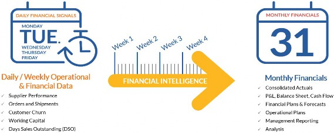
Figure 12.1
Now that OneStream has introduced Financial Signals via Analytic Blend, we’ll be discussing how you can design your Analytics Reporting Center of Excellence to provide the operational insights needed to guide your business.
Analytic Blend
Overview of Analytic Blend
Analytic Blend › Overview of Analytic Blend
What is Analytic Blend?
We have established that there’s a need to help finance leaders who are looking to become better business partners by using Analytics on top of their current financial models, but what really is Analytic Blend, and how is it going to help you? What should finance leaders consider when implementing it? These are just some of the questions you should be able to answer as you approach any implementation of Data Analytics.
Analytic Blend is the concept of aligning your different datasets into a consumable, unified reporting view on a Dashboard. This data can be Cube Consolidation-based, Planning, Specialty Planning, Relational, or Operational/Transactional data that stays in its current position and Operational/Transactional data that needs light to moderate financial intelligence added (BI Blend).
BI Blend is an Engine within OneStream, similar to the Consolidation Engine or Stage Engine that allows OneStream to provide the light to moderate financial intelligence piece to the overall Analytic Blend model (as shown in Figure 12.2).
This financial intelligence is provided through mapping, aggregation, simple currency conversion, and Derivative Rules, among others. There are seven engines in total that make up the OneStream platform:
BI Blend
Finance
Stage
Workflow
Data Quality
Data Management
Presentation and BRAPI.
Out of those seven engines, the ones that we are focused on – that define Analytic Blend – are the Finance, Stage, Presentation, and BI Blend Engines. To summarize, Analytic Blend is the combination of the core book of record, Planning, and daily/weekly signaling, and financially intelligent transactional analytics into a single platform.
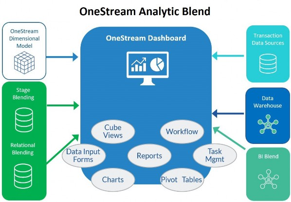
Figure 12.2
BI Blend is not a replacement for traditional BI Reporting tools, but instead should be viewed as a “read-only” aggregated storage model designed to handle the reporting of larger datasets that do not fit within the traditional OneStream Cube.
These types of reporting requirements typically reside in Data Warehouses or Lakes that have no auditability, control, or telemetry. How does a business rationalize data that scales to heights that do not fit within their Data Warehouse, and how do they standardize reporting at the key levels they require to create Financial Signals? By leveraging OneStream’s Extensibility and data governance tools, described in earlier chapters, OneStream’s BI Blend Engine uses Operational Telemetry to transform and unveil your Financial Signals.
Operational Telemetry within the OneStream Platform is the process of applying Financial Intelligence to your transactional datasets using Accounts, hierarchies, dimensionality, mappings, and rich-calculations within one singular OneStream financial model. The resulting Telemetry data, called Financial Signals, is aggregated and stored within column-indexed tables in OneStream, and then brought into unified data visualization Dashboards to guide and support the business in real-time decision making: daily, weekly and monthly.
These views provide finance leaders with the ability to measure their operational insights at the frequency required to be proactive within today’s economy. With the ability to adjust plan targets ahead of the month-end close, finance teams are able to adjust and steer the business appropriately, acting swiftly on timely vital information.
In summary, BI Blend is not a BI Reporting tool replacement, but adding Financial Intelligence to your operational datasets can provide benefits such as:
Faster decision-making, supported by high-frequency operational data
Track daily business trends
Add Financial Intelligence to operational data
Manage financial performance daily
Drive monthly financials based on daily operational insight
Powerful analytics through unified visualizations
Visualize finance data
Visualize operational data
Combine in one visualization
Securely visualize and analyze your latest financial data
Immediate access to latest financial data
Leverage OneStream security as a query filter
Data latency eliminated
Data quality guaranteed and auditable
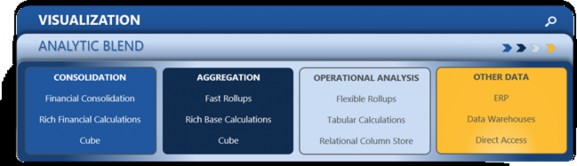
Figure 12.3
In order to achieve these benefits, we must first understand how BI Blend came to solve the business challenges your finance leaders face. Throughout this chapter, we will be discussing the two realms of finance that have been on a converging path and, to do this, we do not focus on trying to close your General Ledger every day when implementing BI Blend. Instead, we shall focus on defining what business problem you want to solve, and what transactional dataset you will require to solve it. Then we focus on applying your current Financial Intelligence from your financial close Consolidation, or Planning processes in OneStream, and integrating it with the specific transactional datasets – so you can understand the vitals that drive working capital, sales opportunities, or revenue from customer sales.
Analytic Blend
The History behind Analytic Blend
Analytic Blend › The History behind Analytic Blend
Why Do We Need It?
The OneStream platform simplifies and unifies your financial close and Consolidation, Planning, Forecasting, Data Quality, and Reporting. It is used today – around the world – from small to mid-sized companies, to global enterprises, to handle complex financial reporting requirements.
OneStream solves traditional problems like shortening the close, delivering more timely and accurate reporting packages, streamlining financial processes, and eliminating redundant legacy CPM applications. While this has worked for many organizations, we are seeing a shift in the Office of Finance that focuses on finance teams’ efforts around Operational Planning and BI to support financial decisions. They want to pull data more frequently, and load more transactional volume types of data with the ability to execute overnight as a batch process, or on-demand throughout the day. Waiting until month-end is no longer acceptable for businesses to operate effectively, especially in high-stress economic environments. These higher frequency datasets scale in volume quickly, become stale the moment you turn your head, and require refreshes at the snap of your fingers.
OneStream knew this high rate of change and demand would not fit the traditional OneStream Cube, and would require data governance and financial intelligence that delivered the robust reporting needed to make sense of these more transient transactional datasets.
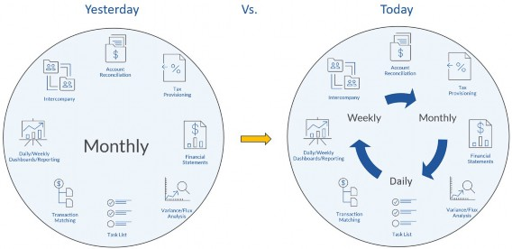
Figure 12.4
Based on Figure 12.4, above, OneStream provides the ability to aggregate quickly, and apply financial intelligence-leveraging hierarchies, which already exist to align the results among daily, weekly, and monthly time frequencies. It was very evident that in order to deliver unified views of information, two sides of the house – 1. ERP, which runs day-to-day business activities, and 2.
CPM which manages businesses monthly – needed to be combined into one unified model using ‘Data Blending’.
Data Blending in BI Blend provides:
Insights within your financial ERPs, warehouses, and OneStream.
Agility – vertically and horizontally within your business.
Alignment across the organization at the reporting points key to the business.
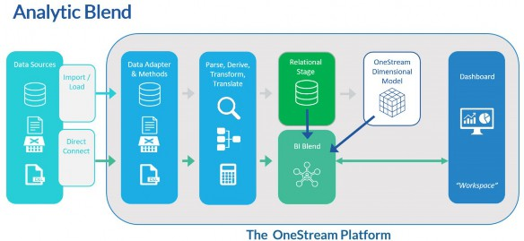
Figure 12.5
In order to accomplish the unified views above, OneStream leverages its new BI Blend Engine (shown in Figure 12.5), which sits within OneStream’s Stage Engine. The BI Blend Engine leverages new Stage cache functionality that allows it to rationalize and process large transactional datasets ‘in memory’ and write the results out to SQL-based column store indexed tables.
Once the data is written, it is considered ‘read-only’ and can be dropped and recreated as frequently as the End-User would like it to be – making it scalable in every aspect. The engine leverages existing mappings and hierarchies, as shown in Figure 12.6, to apply Operational Telemetry, resulting in a financially intelligent dataset for reporting. The BI Blend Engine uses the Cube hierarchies’ Parent Members to evaluate all of the Base Members within that hierarchy underneath it, to derive and aggregate the Parent levels to the finalized column store index table. During this process, BI Blend also utilizes key properties within the Cube to perform direct method translations, based on the Cube’s defined reporting currency.
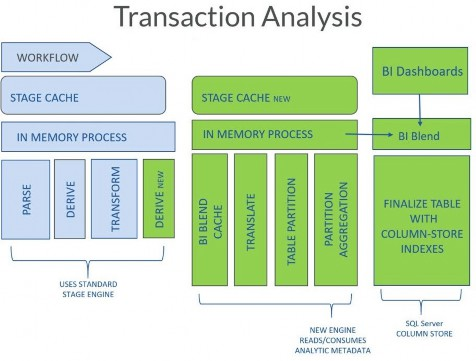
Figure 12.6
Analytic Blend › The History behind Analytic Blend
When Should We Use It?
With this model, OneStream is combining relational, Stage, Cube, and source transactional data in one platform and financial model. This allows you to let the data reside where it belongs and prevents businesses from compromising their current processes inside a traditional Cube-based model.
Our goal is never to replicate an entire Cube or an entire ERP book of record dataset within BI Blend. Traditional Cube-based models are more structured by nature, but BI Blend can leverage these structures to connect your structures to your source system transactional data, such as invoice data related to customers or vendors.
Anytime you find yourself in a design, and the Dimension you are discussing is related to customers, for example, you should stop and consider whether or not you are compromising the goals of the Cube-based financial model. You likely have thousands of customers that change frequently in both relevancy and data volumes. It is important, in situations like this, to consider tools like BI Blend to achieve your reporting goals.
BI Blend is efficient and performant with large transactional datasets not just because it processes the data ‘in memory’ in a cached state, but because it also allows you to aggregate data via Blend Units dynamically or based on your definition! Within the BI Blend Engine, OneStream lets you determine what Dimension should drive performance and be assigned as the Blend Unit. The engine processes and aggregates all data by the Blend Unit, which is one of the first design considerations when undertaking implementations. This is conceptually similar to the Cube-based model, where parallelism and performance are increased by adding more threads. The more Members you have to aggregate means that Dimension should be the Blend Unit. With Blend, any Dimension can be defined as a Blend Unit, not just Entity-like in the Cube-based model. The aggregation process works like this:
The Blend Unit is defined, based on how data will be consumed and aggregated.
The engine aggregates the Blend Unit first and creates a page for each Parent and Base Member in the defined Blend Unit Dimension.
Next, the Blend Unit pages are aggregated for all other Dimensions in parallel by the Blend Unit.
Cases where Analytic Blend should be considered are:
BI Reporting – to provide the ability to add rationalized reporting against source data.
Multiple BI Tools – to eliminate the maintenance of multiple systems, and the challenge of Security. OneStream is a single source.
Attributes – to incorporate Attribute reporting, such as invoices or projects with aggregated reporting against the Cube Dimensions.
Aggregation and Reporting – column Store Index, stored Parent data
Transient Data – create Report, drop, rebuild
Aggregation – bypass Consolidation overhead for fast reporting, similar to other high-performance Aggregate Storage solutions
Intermediate Data Source – where Blend is used as a high-performance pre-processor to source data to the Cube. Lots of customers are pushing to load more transactional-level detail to Stage so, when that detail exceeds the norm, Blend can be used to eliminate compromising situations that may arise, related to complete mapping or transient metadata.
Let’s review and summarize the dos and do nots of BI Blend.
We’ve established BI Blend is not a BI replacement reporting tool and that we shouldn’t look to replicate entire ERP datasets or traditional problems that a Cube-based model would solve. Okay, but what else specifically should we consider? BI Blend is first and foremost a read-only analytic modeling tool that leverages our Cube Dimensions for aggregations at specific Parent levels. Blend data is written and stored outside of Cube in the Application database tables as a SQL-based column store index. It creates unified views for slice and dice insights, has some financial intelligence, and allows you to drop and recreate on the fly – making it very susceptible to handling incremental metadata use cases where point in time reporting (as well as up to the minute reporting) needs to be accomplished.
Static point in time reporting is accomplished through the use of our Star Schema functionality. When using Star Schema functionality, you can align your results with our Leveled Hierarchy feature. BI Blend provides basic direct method translation to your reporting currency as well as additional attribute-level reporting through the Attribute Dimensions within the Cube, and within our existing Stage Engine. Lastly, it provides rich calculations via derivative Transformation Rules that behave differently to traditional Derivative Rules and have comparable data buffer concepts to OneStream’s Finance Rules. Other Cube and metadata settings used by BI Blend include the Account Type, which helps manage hierarchy aggregation, Entity Currency for simple rate translation, and Workflow tracking and input frequencies which help drive the table creation within Analytic Blend.
What does it not do? And where should you determine whether to use a more traditional Cube-based model? BI Blend never writes data to the Cube and doesn’t handle complex translation, Consolidation, or elimination logic. If your data requires this type of logic, you should consider a traditional Cube-based approach. More specifically, the BI Blend solution does not use Member Formulas or rules from the Application Cube, relationship properties such as PCON, POWN, or aggregation weight, which supports any type of complex Consolidation or custom elimination logic. Simple translation using the Cube’s reporting currency is mentioned above, but the solution would not be used to handle any type of custom translation logic or periodic value translation methods that would typically be found in a Consolidation Cube model.
Analytic Blend › The History behind Analytic Blend
Analytic Blend Data Model Types
Within Analytic Blend use cases, there are defining model types or characteristics that help identify when Blend should be used. We will go into these models in more detail later on in the data source section, but these model types include:
Multidimensional Hybrid Model – Highest financial intelligence model type with rich calculations, multidimensional reporting, and security requirements
Financial & Operational Model – Medium Financial Intelligence model type with medium to low-level calculations, table-level security, table-level metadata geared towards dropping and recreating each time, basic drill reporting, or pivot analytics
Excel or Outlier Model – Very flexible to be financially intelligent (or not). Not multidimensional, lower volume based on Excel files that rely on human intervention, basic drill reporting, or pivot analytics
Relational Model – No financial intelligence, table-level security requirements, basic pivot analysis requirements, basic drill reporting, or pivot analytics
Operational Telemetry Model – These are true deviations from the standard financial Cube or hybrid model, above, and will be close to real-time analysis and signaling
Analytic Blend › The History behind Analytic Blend
Analytic Blend Design Considerations
When designing Analytic Blend, you first want to consider the following questions to define your use case. This is important because you want to continuously confirm that Analytic Blend is the right fit for your use case. The key questions are highlighted below:
What’s the analytic reporting use case we want to accomplish? Consider where in Figure
12.7 your data is coming from.
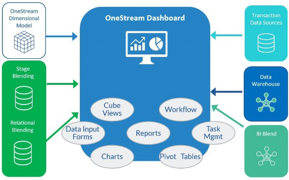
Figure 12.7
Are we consuming or creating?
See Figure 12.8 below; this helps identify if the model type will be a true operational BI, multidimensional hybrid, or Consolidation Cube-based model type.
How will this be integrated into reporting processes?
Who is the main consumer of this information?
How will this information be delivered for consumption?
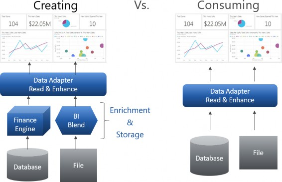
Figure 12.8
Key Design Implementation Concepts are as follows:
Design starts with end-reporting in mind, and ends with reporting!
Define your data source inventory
Spreadsheets, Financial & Operational Reports, KPI/OKRs, Access, Transactional
Define the new data view you want to achieve in your Analytics implementation
Are they financial or operational KPIs, or both?
What’s our data integration strategy for our data source inventory?
Are we using BRs, FDX Connectors, or SQL Adapters?
Are we automating the integration via an overnight batch process, and on-demand during the day?
Will it be a central or an inline Workflow process?
Have we defined all of the necessary Dimension Mapping Rules that exist in the Cube, to do aggregations on?
Data creation – Calculations, translations, and aggregations
Are all of the appropriate time-based or User-Defined measures defined? For example, quarterly KPIs or trailing metrics
Do we require a specific Analytic Blend Scenario Type to be used to hold a Dimension the financial model may not need, but which Blend needs in order to provide aggregated reporting at certain Parent levels?
Will attribute Dimensions be used for aggregated reporting and, if so, are they defined in the Cube or Stage?
Have we thought about how we want to prepare the data views?
Will we be using Dataset Business Rules, SQL Data Adapters, or the BI Blend Adapter components?
Finally, how are we planning to present the information to the End-User, and do we have multiple End-User audiences relative to the data we are collecting?
Analytic Blend › The History behind Analytic Blend
Analytic Blend Data Sources and Integration
One of the key items with Analytic Blend is the ability to get data out of OneStream (or out of another data warehouse) without having to use a typical connector to bring it into Stage or the Cube. This feature came out with the 5.3 release, and it’s called FDX Queries; FDX stands for Fast Data Extract.
There are approximately nine different FDX queries that can be used for different reasons, such as a data source for a load, or to create a table to use in reporting for Analytic Blend. For example, say your business has a bunch of dynamically-calculated data, as well as stored data, that you want to extract out of the system to build a Dashboard on. You could use the BRApi.Import.Data.FDXExecuteCubeView call to run the Cube View, via a Business Rule, that has all of the data you want to extract and put in a table. One benefit to this approach is that since it is a rule, you could layer on another extract to create a custom view of the data to use in a Report component within Analytic Blend.
In this section and the next one, I am going to go over the most common FDX queries and what you might use them for.
BRApi.Import.Data.FDXExecuteCubeView– this call is used to extract a Cube View that you have built in order to take that data from the Cube View and put it into a table to be used for Analytic Blend. Please see above for an example of when you might use the Cube View FDX query.BRApi.Import.Data.FDXExecuteCubeViewTimePivot– this call is very similar to the previous call, with the exception of the time pivot. What that is going to do is take the Time Dimension and pivot it from being in one column to each month having its own column. This type of call comes in handy if you are trying to take and add months to a table, since all you need to do is add them to the end.BRApi.Import.Data.FDXExecuteDataUnit– this call is really handy when you are trying to extract stored data out of the system. For example, before this call was created, the only way to do something similar was to create a data management job that would extract the data for you. This call also has the added benefit of being able to run using multi-threading, which is where the Fast in FDX comes from. I would use this call if I had stored data that a client was editing, and then wanted to extract it for analysis in a BI component within a Dashboard. You could have the button run the rule that extracts the data and renders below.BRApi.Import.Data.FDXExecuteDataUnitTimePivot– this call is the same call as above, except with the time pivot that we have previously gone over.BRApi.Import.Data.FDXExecuteStageTargetTimePivot– this call is really similar to the Execute Data Unit query, except for the fact that we are pulling from Stage instead of pulling data from the Cube. If you transformed data from multiple Workflows, then you would be able to leverage this call to extract that data from the Stage table (all with a single call). This rule is really beneficial when you have data that needs to be transformed but not aggregated; you can use the Stage Engine to do transformation on the source data, then use this extract – with the combination of Analytic Blend – to create reporting off the transformed Stage data.BRApi.Import.Data.FDXExecuteWarehouseTimePivot– all of the previous calls were focused on pulling data out of OneStream, whether it be in the Cube or in Stage. This call is where you can use similar logic to pull data from an external warehouse or ancillary table that might not be directly in OneStream. You could leverage this call to join ancillary tables with external sources, and even use another FDX query to bring in Cube data to report on. You can see how the leveraging of these FDX queries really opens OneStream up to a whole new level of reporting capabilities.
Analytic Blend
Deployment/Execution Methods
When you are deploying your solution, one thing to consider is how you want the User to interact with the loads. Several different integration options (covered previously) will come into play when you weigh up how to deploy. This section details considerations when generating data that is being reported on. If you are consuming directly from an external source, or a source that doesn’t need the End-User to generate the data, then the Workflow-related section doesn’t apply.
Analytic Blend › Deployment/Execution Methods
Workflow-Related
Since you are leveraging a data source like BI Blend that uses the Workflow, your two main options are a Central Load or a Distributed Load.
The Central Load is setup so that an Admin or a central User controls when the BI Blend tables are created. The distributed load (or inline load) is where you mix the BI Blend load into the User’s Workflow where they are completing the other task.
Two of the main things to consider when deciding on a central or decentralized Workflow would be the End-Users of the Report, and how often the load needs to be performed. For example, if you are leveraging this for a Planning process, and your BI Blend load needs to be loaded daily but the Planning process is only done monthly, you could use a Central Load since it doesn’t follow the pattern of the normal End-User process.
Analytic Blend › Deployment/Execution Methods
Non-Workflow-Related
Another data source that you may be using with Analytic Blend is for leveraging databases to create views or tables to report directly from. This type of integration may require a rule to generate the table or view. If this is the case, then you need to either have a button that triggers the rule, or you need an event such as a load. For example, if you had an Analytic Blend Report that leveraged Cube data merged with another table to give you more detail, you might leverage an Event Handler Rule to create the view once the load was complete. If the load was a BI Blend load (mentioned before), then you could leverage the below transformation Event Handler to have the view created after the load.
BREventOperationType.Transformation.BiBlend.FinalizeBiBlendTable
Analytic Blend › Deployment/Execution Methods
Automate or On-Demand
The next thing to consider in your deployment is whether you are going to have the load ‘on-demand’ only; this means that an End-User triggers the process to create the table or view, or you are going to automate it. If you are going to automate it, you would follow our standard Batch Harvest Process to load the BI Blend Workflow. If you are not leveraging the BI Blend process, then you would have to leverage a scheduler – like PowerShell – to call the Data Management Sequence, which fires the Extensibility Rule to create your tables or views.
BRApi.Utilities.ExecuteFileHarvestBatchParallel
Analytic Blend
Reporting, User Interaction, and Visualizations
Analytic Blend › Reporting, User Interaction, and Visualizations
End Audience and User Interaction
The first thing that you want to think about when it comes to Analytic Blend’s reporting capabilities is who the audience is, and how it is going to be used. For example, if you want to leverage this data in a Report that needs to be used in a Book, then you need to be aware that not all components can currently be used in Books or Extensible documents; for example, BI viewers cannot be used in Books currently. If you are building a standard month-end Report, you might not want to allow the User to make format changes. If you are building a Report for analysis, then you want to give Users all the flexibility that’s needed to really understand the information that they are being presented with.
Analytic Blend › Reporting, User Interaction, and Visualizations
Data Sources for Reporting
Now that you have your Workflow setup, and you have the data that you want to build your reporting in OneStream, it is time to decide how OneStream will retrieve it. There are several different methods that allow OneStream to consume the data. They fall into several different big buckets, based on the data Type you are trying to consume.
Relational Model – With a relational data model, OneStream will simply consume relational data. You will be more likely to use a Data Adapter with an external connection via a SQL Data Adapter, or a BI Blend tab found in the Data Adapters in the dashboarding section.
Excel Model – Here, OneStream consumes an Excel file instead of a database. This type of data source is very helpful for data that is not housed in a source system and is not overly large. There are some considerations when using Excel as your data source; you are confined to the limitations of Excel, the file has to be unzipped and read each time it is processed, and you have a big potential for User error because the file is kept up to date, manually.
Multidimensional Hybrid – This type of data source has the highest financial intelligence because you are leveraging OneStream and its multidimensional capabilities to structure your data. Since we are using OneStream’s dimensional model, you will have to take the data model size into consideration and know that – on the larger data models – you might have some performance tuning and hardware requirements.
The data that you usually analyze here is a periodic snapshot of your data in OneStream, and can be gathered in different ways. The main consideration is the amount of data you are extracting. For some of the solutions – where you might not need a lot of data – you can build a Cube View and use that as the source. On the other hand, for more complex solutions, you might need Business Rules to extract a large amount of data or run multiple Cube Views in parallel. If you find yourself in this situation, I would advise using an FDX query to extract the data out of OneStream. There are two types of extracts: the FDX Data Unit extract or the FDX Cube View extract. The main difference is that with Cube Views, you can extract dynamic data; with the Data Unit query, you cannot. There are also two variations of each of these rules where you can have the data display in a pivot, based on the Time Dimension.
BRApi.Import.Data.FdxExecuteCubeView BRApi.Import.Data.FdxExecuteDataUnit
Financial & Operational Model – This type of data source is really where you try to get an indicator as to how the business is doing on a daily basis. This type of data usually
doesn’t have a lot of meaning without adding some financial intelligence to it. For example, you might have sales data that you want to map to a given Entity and then join with another attribute from another table to aggregate up – to see how the business is tracking against the plan. This type of data model and data source can be complex when leveraging SQL Data Adapters, connections to data warehouses, and FDX queries. When using this data source, consider when the individual parts are refreshed; is it overnight for some, and throughout the day refreshments for others? You will want to consider performance when looking at how often each process is refreshed; because of the resource requirements, you will control this process centrally.
Analytic Blend › Reporting, User Interaction, and Visualizations
BI Viewer or Large Pivot Grid
Now that we have all of the background considerations in place, we can start to get into the more exciting (in my opinion, at least) stuff. How do we want to turn our information into a masterpiece? The two main ways to consume data in the Analytic Blend methodology is through BI Viewer or a Large Pivot Grid. One of the key factors that will push you towards a large pivot grid (over a BI Viewer) is the amount of data you are reporting on.
Large Pivot Grid – The large pivot grid is all about large amounts of data. And that is because it can leverage paging. In other words, OneStream does not try to render all the data at once. Large pivot grids pull directly from a table and can filter down the data in some basic manner, as seen below in Figure 12.9.
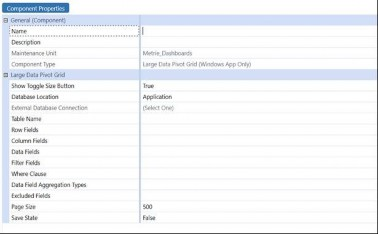
Figure 12.9
In the large data pivot grid section, you will see that you can connect directly to a table only. You can choose between an application table, BI Blend database table, or an external database table. The next sections will show what a User will see when they open it, so you need to ask what you want to display in the rows, columns, data, and filter fields.
You can have more than one table column in each field, and need to separate them with a comma. The next three options control whether you are showing all the data in the table or not. You can leverage the where clause to filter down the results, data aggregation, or the excluded fields so a User cannot see those fields from the original table.
The next field is the paging size; this is an important field when it comes to performance. The higher you have the paging size number, the more rows that the large pivot grid will allow to appear (up to a maximum of 3,000 rows).
The last option is the save state, which allows the User to update the default settings and keep their preferred look to the grid. Below, you will see an example of a User’s view of a large pivot grid.
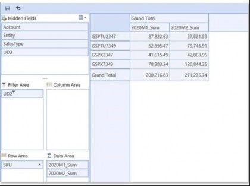
Figure 12.10
BI Viewer – The BI Viewer component is where you can get the most visualizations and interactions with an End-User. BI Viewer has many different reporting options in it. It has charts, graphs, pivot tables, grid reports, and filter items. One big difference between the large pivot grid and BI Viewer is that the BI Viewer (as mentioned) does not have the ability to do paging.
The BI Viewer does, however, have one big capability that the large pivot does not. It has the ability to do simple calculations on the data from your data source. You can do gross margin percent calculations, and calculate the time between the current day and a date in the table. You can also do some simple logic statements as well, like If statements, as well as others. For a full list, go into the BI Viewer tool and – in the fields on your data source – right-click and add in a calculation. This will open all the options that you have in the calculation builder. Below is an example of what you can create for your End-Users.
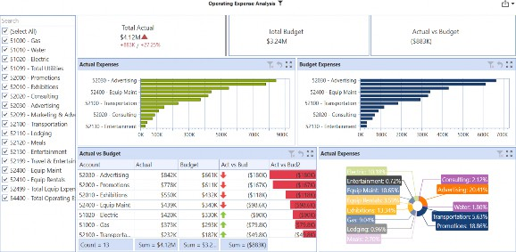
Figure 12.11
Analytic Blend › Reporting, User Interaction, and Visualizations
BI Blend-Specific Functionality
When you are considering BI Blend as part of your solution, there are some overall general items to consider.
Calculations – The Blend Unit is a setting, on the initial setup, that tells OneStream how to divide the load into pages to process. This is important because it affects performance should you try to process all the data in one Blend Unit… you can’t leverage multi-threading. It will also affect your ability to run calculations on the data that you are loading. For example, when you are leveraging blend data buffers in Derivative Rules, you can only run calculations on the page that you are processing. Therefore, if you choose the wrong Blend Unit, and try to run a calculation on two different pages, it will not work. You will notice in my previous comment that you can reference a blend data buffer in the Derivative Rule calculation; this is an added feature to BI Blend loads that you cannot do in normal Derivative Rules that process on the typical Stage load.
Star Schema – Here, you can have BI Blend produce a star schema when you generate the loads. OneStream produces several different tables when this option is selected, and will produce a set of tables that show all of the aggregating Dimensions (or just the ones that you have designated in the star schema). Next, it will produce a view of the data joined with the Dimension tables that include the basic metadata columns, based on your settings in the Workflow setup.
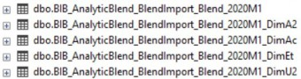
Figure 12.12
Leveled Hierarchy – The leveled hierarchy is a feature that is only available when you use a star schema. It gives you the ability to produce a hierarchy in your reporting tool instead of using a flat list. This feature works by creating additional columns in the table to tell you where the data exists. Currently, this feature is not available on the Account Dimension. Parent Members will be stored as XF Stored at lower levels, and Base Members are marked as XF Leveled. Please see the below illustration for a visual of this.
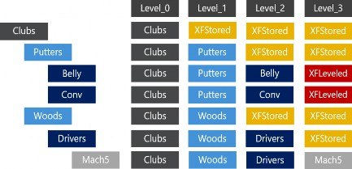
Figure 12.13
Performance – There are several things to consider, in terms of performance, when leveraging BI Blend. The first is that you will want to have a dedicated server for BI Blend. This is because BI Blend will utilize all the memory that is available when it is processing data, in order to get through it as fast as possible. With any dedicated server, you will want to think about the amount of aggregation and calculations you are running. If you have a lot of aggregation, then you will be producing a lot of rows, which will mean that you need a larger server with more RAM and a higher processor speed for it to process timely. You will want to make sure that the amount of data that you are trying to process doesn’t exceed the 2GB in memory limitation that is a function of .NET. Lastly, you will want to consider when to run your shrink. This is a setting that shrinks the database after it has been run, in order to clean up the fragmentation that follows from BI Blend creating and dropping the tables every time it is run. The best practice is to make sure that you are not running the shrink in parallel, as it runs across the entire database. Also, make sure it is on the last job in the batch, or as part of an overnight process. A good way to check for the amount of data explosion is to look at the processing log on the Workflow, which has the detail of the load. This will give you the ability to see who is running the load, and when, as well as what the data looks like before and after aggregations.
Analytic Blend
Conclusion
In conclusion, you should by now start to see how Analytic Blend can really open the path toward a whole new level of reporting inside OneStream.
In reading this chapter, we have given you the tools to design a solution using some of the key concepts of Analytic Blend. If your solution is trying to utilize transactional data for directional reporting, or taking and combining OneStream data with outside data to give you more flexibility on the overall data model, you can see how it is possible in OneStream. In our ever-changing world, using Analytic Blend can deliver information to the key decision-makers that they need when making truly informed decisions.
Analytic Blend
Epilogue
There is always time for fun at OneStream. We truly all work hard and play hard.